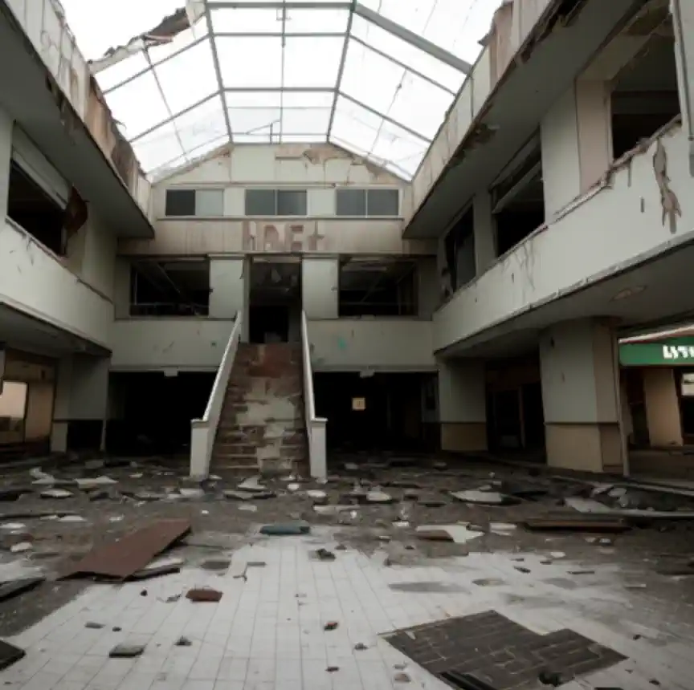

Dream: A Movie
By Sudip,
Table of Contents
Main character me, brother and another guy. Who is black.
I was cleaning a toilet because it was overflowing. That made vomit reflex and woke me up. Took me at least 3-4 tries to finish cleaning
There’s another scene where 3 of us were walking at the side of a road/railway. Suddenly a tank came and blocked the whole road. Veichles came fast and crashed into it. 2nd vehicle broke the tank itself. It happened very quickly in less than a minute and we can hear injured people crying. I was scared because I was worried if some debris would come hitting us and injure us. We left the scene quickly. It started to rain and we took shelter in a building. This building I have never seen before, it was big, a lot like shopping mall but abandoned. There was lots of people though who were seeking refuge in this rain. I was the first one to reach the building. But even after waiting for a while brother didn’t come, so anxiety took over and I went looking for him. I thought he probably lost direction. He was alone. Which was odd, but expected. I asked where the other guy was and he said that there’s some people looking for him and want to beat him up, so he went into hiding. I was on top of the balcony and saw two guys looking for someone, one guy had a big stick on his hand. I knew this guy. At first I was scared to make eye contact. But soon realised that they weren’t looking for me, so I made eye contact. I even thought of trying to persuade them to stop from hurting that guy. I talked with them, but memories of what happened is fuzzy.
In another scene mom was all alone in this rain at home which made me very sad, it was raining heavily.
In another scene I was in the charge for fixing the plumbing of the house. The plumber came and did the work haphazardly and I had to supervise them to fix it properly. At this time brother was in studying in front of a tuition teacher. The teacher was most probably CC sir.
Oh and there was a map of some place. Which I think I have seen before in another dream but not sure.
